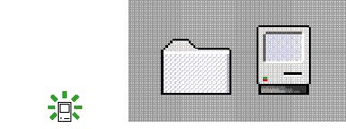
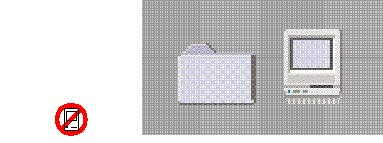

Color IconsMacintosh system software ships with
full-color icons that appear on color monitors. Your
application can also provide color icons.
Don't design a color icon that's substantially different
from your black-and-white icon. When you add color to an
icon, it's best to leave
the one-pixel black outline and other black lines that form
the icon, and fill the icon in with color. Coloring or
graying the icon's outline makes the icon appear less
distinct on the desktop. Remember that the user can change
the background color of the desktop as well as its pattern,
so your icon may not be displayed against the background on
which you designed it. If you use ResEdit version 2.1 or
later to create your icons, it provides a way to look
at your icon against different backgrounds to see whether
your design is effective in various environments such as
black-and-white displays or color displays of different bit
depths. Figure 8-21 shows how
icons with a black border look on a gray
background.
Figure 8-21 Icons with a black outline

Figure 8-22 demonstrates how
an icon appears less distinct from its background without
the strong black border.
Figure 8-22 Icons without a black outline

Subtopics
-
- Icon
Colors
- Anti-Aliasing
|